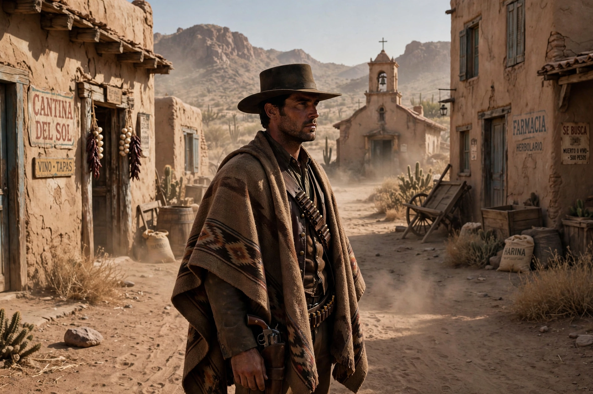

| Dollars Trilogy | |
|---|---|
 The Man with No Name | |
| Directed by | Sergio Leone |
| Starring | Clint Eastwood |
| Music by | Ennio Morricone |
| Release dates | 1964–1966 |
| Country | Italy |
The Dollars Trilogy (Italian: Trilogia del dollaro), also known as the Man with No Name Trilogy, is an Italian film trilogy directed by Sergio Leone and starring Clint Eastwood as the laconic antihero known as "the Man with No Name". The three films are A Fistful of Dollars (1964), For a Few Dollars More (1965), and The Good, the Bad and the Ugly (1966). Together they defined the Spaghetti Western and launched Eastwood to stardom.
A wandering gunfighter plays two feuding families against each other in a Mexican border town. The plot closely follows Akira Kurosawa's Yojimbo, leading to a successful lawsuit by Toho.
Two bounty hunters — Eastwood's "Manco" and Lee Van Cleef's Colonel Mortimer — pursue the outlaw El Indio and his gang.
Set during the American Civil War, three gunmen race to find a fortune in buried Confederate gold. The film's climactic three-way duel in a cemetery is one of the most famous sequences in cinema, and Ennio Morricone's main theme became a worldwide hit.
The films were shot largely in the Tabernas Desert of Almería, Spain, standing in for the American Southwest and Mexico. Leone's style — long stares, extreme close-ups of eyes, sparse dialogue, and music composed before filming — made the trilogy hugely influential worldwide despite initially dismissive American reviews.